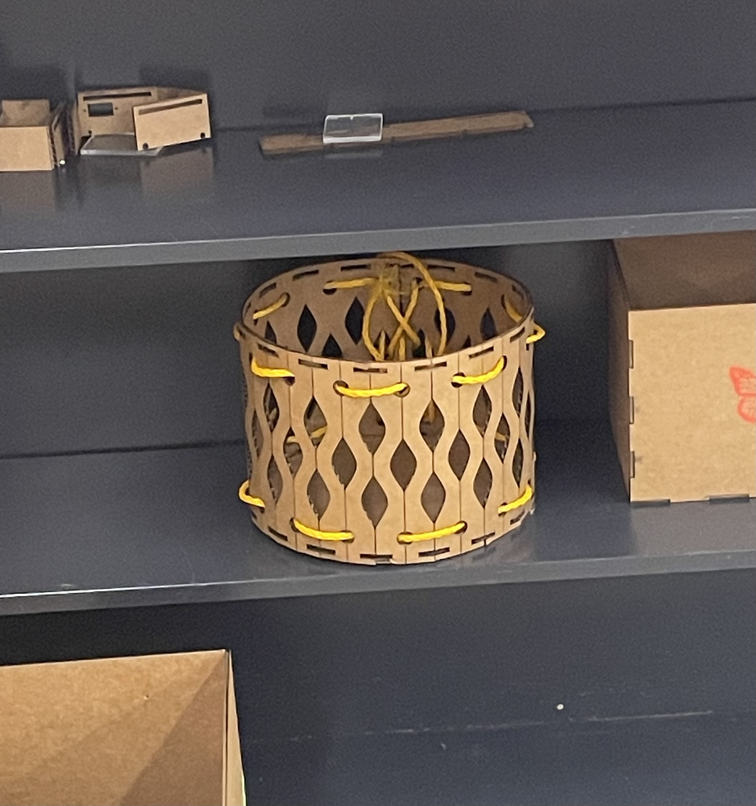
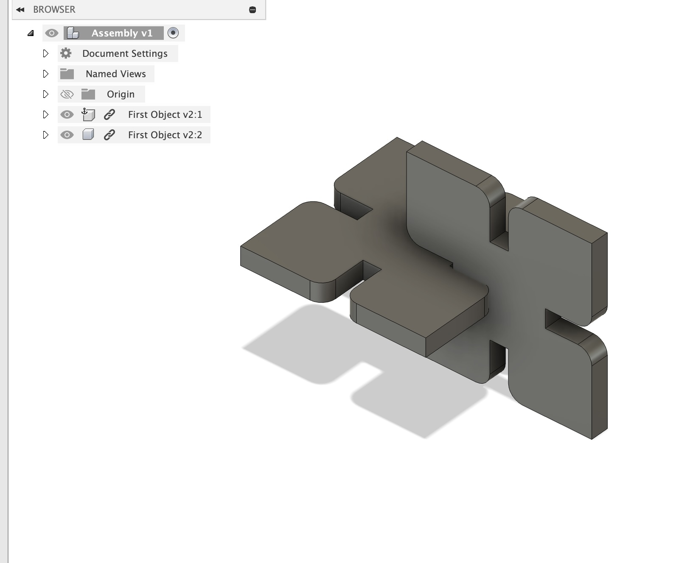
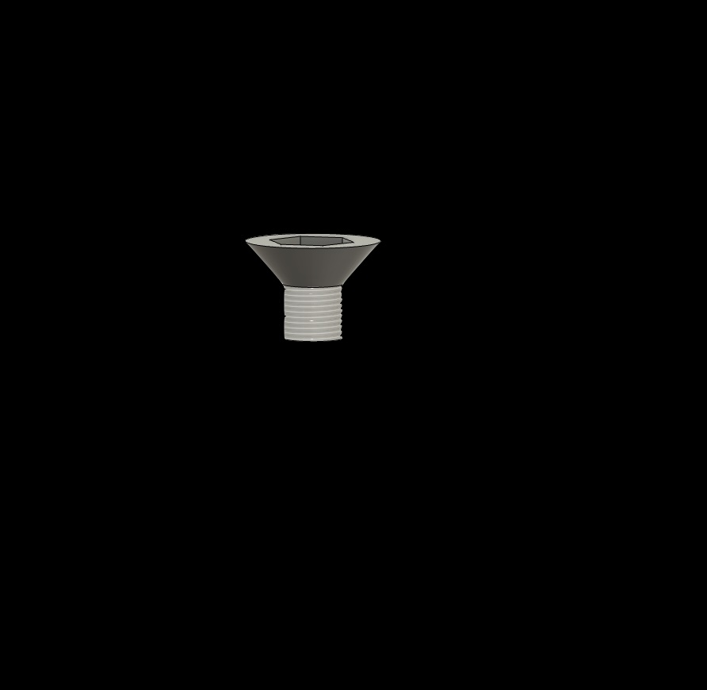

<div class="textcontainer">
<p class="margin"> </p>
<p class="margin"> </p>
<div class="flexrow">
<a id="btn" href="./temp.zip" download>Test Download Button
</a>
</div>
<p class="margin"> </p>
<h3>Assignment 1: I've made a box!</h3>
<h4>
This is the box:

<p class="margin"> </p>
Process:
<p class="margin"> </p>
At first I wanted to make a box with a butterfly shaped bottom. The challenge of that design would be making curved edges where the wings were. We learned about 'living hinges' as a way to make flat surfaces like wood and carboard curve
<p class="margin"> </p>
<h3>Assignment 2: Fusion 360 Tutorial</h3>
<p class="margin"> </p>
Here is what I made by following the tutorial:

<p class="margin"> </p>
<h3>Assignment 3: Fusion Modeling</h3>
<p class="margin"> </p>
I've made a screw:

<p class="margin"> </p>
I also made a glass from my hotel room:
<iframe src="https://assets.pinterest.com/ext/embed.html?id=707698528991365605" height="510" width="450" frameborder="0" scrolling="no" ></iframe>
</div>